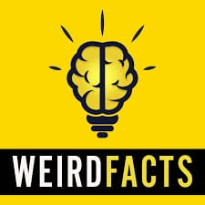
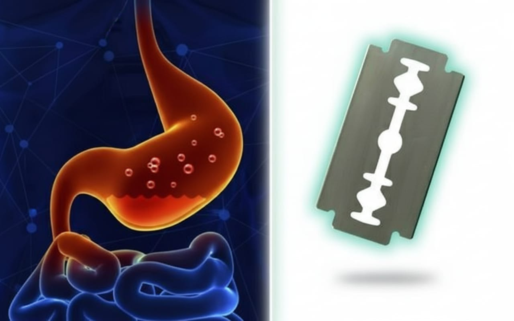
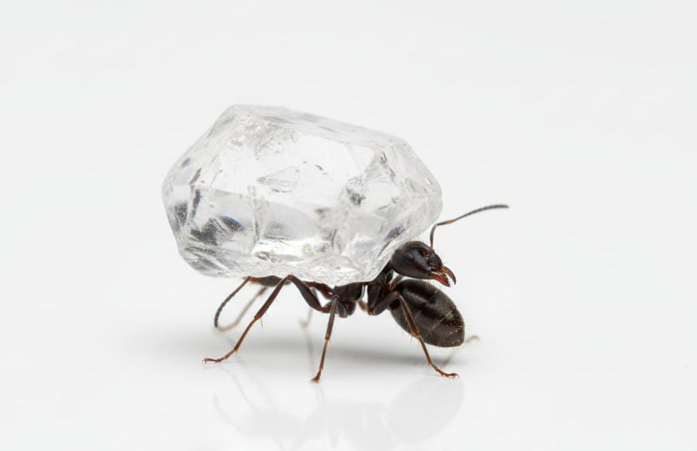
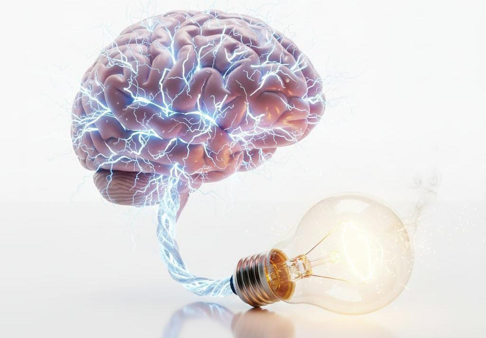

حقائق علميةغريبة
تجارب علمية غير متوقعة، تذهلك بما يحدث في الطبيعة والعلوم
هل فكرت يوما بالأشياء المدهشة التي تفعلها الطبيبعة؟
العالم من حولنا مليء بالحقائق التي تبدو وكأنها خيالية، لكن العلماء أثبتوها بالتجربة والملاحظة. في هذه الصفحة، سنستعرض مجموعة من الحقائق العلمية الغريبة والمذهلة، التي قد تدهشك أو تجعلك تتساءل كيف يمكن للطبيعة أن تعمل بهذه الطريقة. ستكتشف كيف يمكن لبعض المخلوقات أو الظواهر الطبيعية أن تتحدى المنطق البشري، وكيف أن قوانين الفيزياء والكيمياء تنتج أشياء غير متوقعة حقًا.

غرائب العلم: حقائق مذهلة
المعدة و شفرة الحلاقة

المعدة البشرية تحتوي على حمض قوي جدًا يسمى حمض الهيدروكلوريك، قادر على تحطيم المعادن. تجارب علمية أثبتت أن المعدة تستطيع إذابة شفرة حلاقة معدنية بالكامل خلال ساعات قليلة. هذه الحقيقة تظهر القوة المدهشة للعمليات الكيميائية في جسم الإنسان، والتي تتيح للجسم التعامل مع مواد يصعب تصورها كيميائيًا.
النملة و الأوزان

النمل قادر على رفع وحمل أوزان تفوق وزنه بأضعاف عديدة، أحيانًا يصل إلى 50 ضعف وزنه. هذا يرجع إلى القوة النسبية لعضلاته الصغيرة وبنيته الهيكلية الفريدة، مما يجعله نموذجًا مذهلًا عن القوة في الطبيعة مقارنة بالحجم.
دماغ الإنسان و توليد الكهرباء

دماغ الإنسان يولد باستمرار إشارات كهربائية لتحفيز الخلايا العصبية ونقل المعلومات. إجمالي هذه الكهرباء يكفي لتشغيل مصباح صغير بقدرة 20 واط تقريبًا، رغم أن الطاقة موزعة على ملايين الخلايا العصبية. هذه الحقيقة تبيّن مدى تعقيد الجسم البشري وكفاءة تحويل الطاقة في الطبيعة.
كيف تكشف الطبيعة عن غرائبها:
الطبيعة ليست مجرد بيئة عادية، بل مصنع لا ينتهي من المفاجآت. كل ظاهرة تبدو غريبة أو غير متوقعة هي نتيجة عمليات دقيقة ومعقدة تحدث خلف الكواليس، غالبًا دون أن نلاحظها. من قدرات الحيوانات المذهلة، إلى الظواهر الطبيعية النادرة، وكل شيء بينهما، تكشف هذه الحقائق كيف أن العالم أكبر وأكثر تعقيدًا مما نتخيله. فهم هذه الظواهر يساعدنا على تقدير قوانين الطبيعة، قوة البيئة على خلق مواقف غير متوقعة، وكيف يمكن للعلم أن يفسر ما يبدو مستحيلًا في البداية. المعرفة بهذه الحقائق تمنحك فرصة لاكتشاف عجائب الكون بطريقة علمية، وفهم أسرار الطبيعة بوعي ودهشة مستمرة.
للمزيد من المعلومات:
يمكن الرجوع إلى المراجع العلمية والأبحاث المتخصصة حول الطبيعة والظواهر الغريبة، مثل: كتاب “Ripley’s Believe It or Not!” عن الحقائق الغريبة في الطبيعة. أبحاث منشورة في مجلات Scientific American و National Geographic و Frontiers in Biology. قواعد بيانات مثل Google Scholar للوصول إلى الدراسات الأصلية والأوراق البحثية الموثوقة.
فيديو توعوي
شاهد حقائق لم تكن تعرفها من قبل